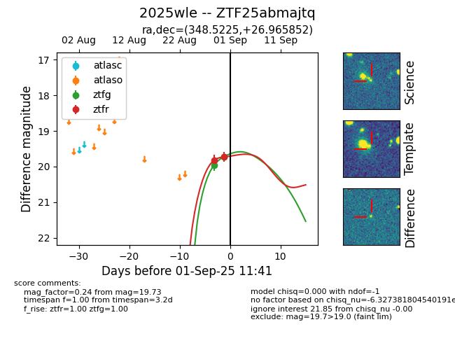

FINK: ZTF25abmajtq
Lasair: ZTF25abmajtq
ALeRCE: ZTF25abmajtq
TNS: 2025wle
YSE: 2025wle
ZTF25abmajtq (ztf,fink)
2025wle (tns,yse)
equatorial (ra, dec) = (348.5225,+26.96585)
galactic (l, b) = (97.5417,-31.06215)

last ztfg=19.86, ztfr=19.60
3 ztfg, 4 ztfr detections